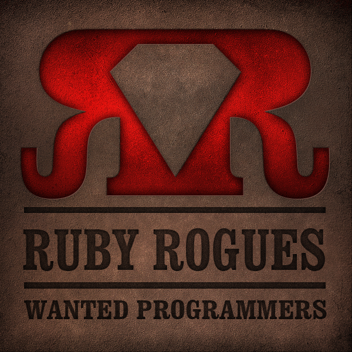

Sharpen Yer Tools!
What is tool sharpening and how it can help you enjoy your job more.
Fox Valley Computing Professionals
May 14, 2014
Kevin Gustavson
Straight North: Helping companies grow through Internet Marketing, Websites and Branding
- Twitter — @kgustavson
- Github — kgust
- Google Plus — +KevinGustavson
Keep your knife sharp. There are few things more dangerous than a dull knife.
— Mervin Gustavson
What does tool sharpening have to do with computers?
Lots...
A well maintained tool is a pleasure to use; a friend.
A neglected tool will let you down when you need it most.
The Basics of Tool Sharpening
Habits are a
powerful thing
Make a short list of things that annoy you
My List:
- git tab completion doesn't work for all subcommands
- Fix or turn off YouCompleteMe
- codecept isn't tab-completing
- Vim: I want Javascript files to open unfolded
- Vim: Enable PHP Syntax checking [PSR-2]
- Vim: Copy-Yank-Put with clipboard=unnamed
- etc....
Making a List
- When you encounter something that annoys you, write it on your list
- When you find yourself making the same typo over and over, add it to your list
- When you need something, but don't have time to research it...
Spend 10-15 minutes every day on your list
- Try to complete at least one item from your list
- Prioritize your list by agony
Developing
a new habit
- The correct method of resizing that image
- A better way to bulk rename files
- A shortcut you want to remember to use
- The correct spelling for that typo
Keep this list
near your desk
- The list will remind you of what you're trying to learn
- It encourages yourself to develop a new habit
- If you've already taken the slow path, go back and repeat using the new method
- Don't forget to cross-off the things that you've completed
Results:
- You'll be slowly sanding down the rough edges.
- You'll have greater job satisfaction.
- You'll be doing your job better and faster.
The shoulders I'm standing on

{{ page.title }}
Powered by
- Jekyll
- reveal.js
- {{ page.config.test2 }}
Code preview
void init_opts() {
int i;
for(i = 0; abook_vars[i].option; i++)
restore_default(&abook_vars[i]);
}